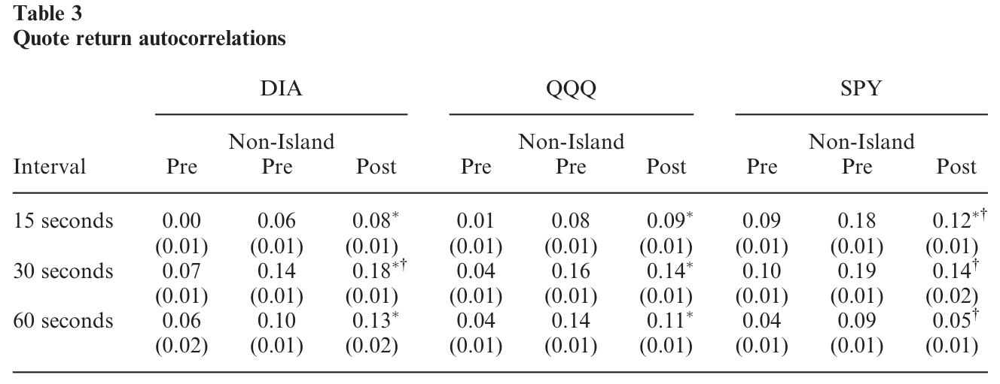
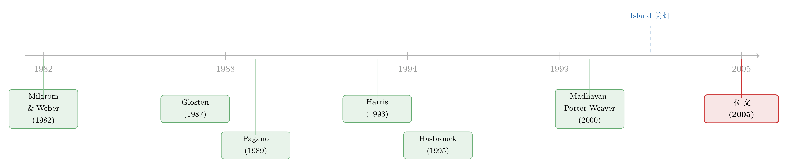

把自家的灯关掉：一个交易所的「黑暗实验」，照出了透明度的价值
本文读的是 Hendershott and Jones (2005, Review of Financial Studies)：2002 年 9 月，为应对 SEC 的监管要求，当时三只最活跃 ETF 的主导交易场所——Island ECN——没有选择「亮出报价、接入互联互通」，反而把整本限价订单簿对所有人「关灯」。作者借这场天上掉下来的实验证明：当一个主导市场失去透明度、订单流随之外流，整个市场的价格发现都会变慢、交易成本整体上升——而当一年后它重新「点灯」，市场质量又回来了。透明度与市场集中度，二者都重要。
1 引言：一个自愿把灯关掉的市场
先说一个反常识的画面。
一家交易所，做的本是「撮合」的生意：买家、卖家把意愿（限价单）挂出来，越多人看见、越多人来，价格就越准、成本就越低。这套「人多力量大」的网络效应，是市场存在的根本理由。可在 2002 年的秋天，全美最活跃 ETF 的头号交易场所，却主动把自己那本厚厚的订单簿——对所有人——藏了起来。
它叫 Island，是当时风头最劲的 电子通讯网络 (electronic communications network, ECN)。到 2002 年年中，DIA（道指）、SPY（标普 500）、QQQ（纳指 100）这三只最活跃的 ETF，最大的交易地盘都在 Island 手里。
事情的起因是监管。1998 年 SEC 推出的 Regulation ATS 有一条硬规定：一个另类交易系统，若在某只证券上的成交量在过去六个月里有四个月超过 5%，就必须做两件事——把报价显示到全国市场系统里，并允许别的场所来跟它的报价成交（对上市股票而言，就是接入 Inter-market Trading System, ITS，即互联互通系统）。Island 在 DIA、QQQ、SPY 上的份额，早就远远超过了这条 5% 的红线。
Island 嫌弃 ITS 的地方在于那个 30 秒期权：一笔订单按 ITS 规则被送到别的市场后，接单方有最多 30 秒来「考虑要不要成交」。对一只价格瞬息万变、价差极窄的 ETF 来说，这 30 秒等于白送给对手一个免费期权——投资者的成本，做市商的利润。Island 一向以「快」立身，这等于要它自废武功。
于是 Island 找到了规则的一个漏洞：如果一个电子系统压根不向任何订阅者显示报价，它就不必发布报价、也不必接入 ITS。 2002 年 9 月 23 日，Island 选择「关灯」（go dark）——把所有受影响的订单一律转成「隐藏」状态，从此对外只剩最后成交价和当日总量。它在给订阅者的邮件里写得很坦白：「我们认为，Island 不可能在满足这些要求的同时，维持订阅者所期待的系统性能。」
故事的张力就在这里：一个本可以靠透明度吃饭的主导市场，亲手关掉了灯。它知道自己会流失订单——但它赌的是，反正关灯之前就已经有约一半的 ETF 成交是冲着「隐藏限价单」去的，那批偏爱匿名、不在乎报价是否公开的客户，大概会留下来。
对研究者来说，这简直是天赐的实验。透明度的价值、流动性的网络效应、市场分割的代价——这些教科书里争论了几十年、却极难在现实中干净度量的命题，被一次监管执法生生劈开了一道口子。
2 制度背景：ETF、Island，与那条「关灯」的缝隙
要看懂这场实验，先得弄清三件事。
第一，ETF 为什么好用。 三只主角 DIA、SPY、QQQ 都在 AMEX 上市，但它们到处都能交易：NYSE、各区域交易所、Madoff/Knight 这样的第三方做市商，以及几乎所有 ECN。更妙的是，ETF 可以在日终按「一篮子标的股票」创设或赎回，这条套利通道把 ETF 价格牢牢钉在指数上。换句话说，ETF 有一个天然的、外部的「真值」锚——它对应的指数与股指期货。这一点后面会变得关键。
第二，Island 是什么。 它本质上是一个极快的、纯自动撮合的限价订单簿，只接受限价单，按「价格—显示—时间」优先级成交。它提供匿名与即时成交，还允许订阅者把限价单「全部或部分」藏起来。它给挂单（提供流动性）方返佣、向吃单（消耗流动性）方收费——2002 年 8 月，这三只 ETF 的返佣是每股 0.11 美分、收费 0.19 美分。
第三，那条缝隙。 Reg ATS 的逻辑是「你若显示报价，就必须显示给所有人」。Island 反其道而行：那我干脆对谁都不显示。关灯第一周，为了挽留订单流，它还把挂单返佣从每百股 11 美分提到 19 美分，与吃单费持平，等于这一周在受影响 ETF 上不赚一分净费。
这就是「关灯」的全部技术含义：交易仍在进行，但订单簿对任何市场参与者都不可见。Island 把这叫做「连续集合竞价市场」。
3 识别策略：两场实验，一道难题
这篇文章最值得学的，是它如何把两个纠缠在一起的效应拆开。读微观结构，方法比结论更耐看。
Island 关灯，同时带来了两件事：
- 透明度下降：主导市场的订单簿看不见了；
- 市场分割加剧：订单流从 Island 外流到别处，交易不再集中。
可这两件事是同一个事件的产物。如果只看 ETF 整体变差了，你没法说清——到底是「看不见」害的，还是「不集中」害的？这正是作者反复强调的核心难题：disentangle（拆解）transparency 与 liquidity externalities。
作者的第一招，是把目光从 Island 移到 Island 之外。逻辑是这样的：
首先，如果市场是完全分割的，那么 Island 单方面变暗，本不该直接影响别的市场的价格发现与交易成本。
接着，一个自然的问题是：万一别的市场其实一直在「偷看」Island 的订单簿来定价呢？那 Island 关灯，反而会恶化别处的质量。
然后，反过来想：如果流动性的网络效应（liquidity externalities）才是主角，那么当 Island 关灯、订单流涌向其他电子系统（主要是 Archipelago 和 Instinet）时，这些市场会因为接到了订单流而变得更有竞争力——成本下降。
这就给出了一个可证伪的预测。作者发现：所有三只 ETF 在 非 Island 那些抢到份额的电子市场上，有效价差下降了，已实现价差（做市方的收入）也下降了。也就是说，别处市场因为接到订单流而更卷了。于是结论清晰：订单流迁移与流动性网络效应，确实是故事的重要一环。
作者的第二招，是那第二场实验。一年多以后的 2003 年 10 月 31 日，Island 重新「点灯」。此时它早已不再主导交易，所以这第二个事件并不是「关灯」的简单镜像——但方向一致。更妙的是，重新点灯时不同 ETF 的订单流回流程度不同，提供了横截面变异：
- 即使某只 ETF 的交易集中度几乎没变，只要透明度回来了，市场质量就改善——这说明透明度本身有价值；
- 而交易集中度回升最多的那只 ETF，质量改善也最大——这说明集中（流动性网络效应）同样重要。
两招合起来，作者把「透明度」和「集中度」这两股力量，从同一个事件里相对干净地分了开。
至于衡量价格发现的工具，作者用的是这条文献的标准武器：Hasbrouck (1995) 的「信息份额（information share）」与共同因子框架，把多个市场报价里「谁在引领价格」量化出来；再配合对 ETF 与股指期货之间引领关系的考察。衡量交易成本则用 Glosten (1987) 的价差分解（下一节细讲）。
4 数据
朴素但够用。样本是 DIA、QQQ、SPY 三只 ETF 在 2002-08-16 至 2002-10-31 间、每个交易日 9:30–16:00 的全部成交与报价，共 54 个交易日（关灯前 25 天、关灯后 29 天）。非 Island 的成交与报价取自 NYSE 的 TAQ 数据库，它能区分 NYSE、AMEX、Boston、Cincinnati、Pacific 等多个场所；其中 Pacific Exchange 跑的是 Archipelago 的 ECN 技术，本质上也是一本自动限价订单簿。份额很小的几家区域所则被合并处理。
5 主要结果：关灯之后，整个市场都慢了下来
把结果串成一条线。
第一，Island 自己塌了一半。 关灯之后，Island 在这三只 ETF 上的交易份额和价格发现的引领作用都明显下降。但它没有归零——大约一半的成交量留了下来。这本身就是个有意思的事实：它说明市场上存在偏好不同（匿名、速度 vs. 透明）的不同客群（clienteles），证明了证券市场的竞争是多维度的，而不只是比价格。
第二，价格变笨了。 这是全文的灵魂。efficient prices（有效价格）是一种公共品，而生产有效价格正是市场的核心职能。作者用「报价中点（quote midpoint）收益的日度自相关」来度量价格效率——一个完全有效、随机游走的价格，其收益自相关应当在零附近；价格若对新信息反应迟钝，自相关就会偏离零。结果是：Island 关灯后，ETF 报价中点收益的自相关明显偏离零，价格调整变慢了。 如表 3 所示。

Table 3: shows the average daily autocorrelation of quote midpoint
第三，价格发现「搬家」去了期货市场。 既然 ETF 现货端变暗、变慢，而 ETF 又天然锚定股指期货，那么定价的主导权就会向期货那边转移。作者发现，Island 关灯后，大量价格发现从 ETF 现货市场迁移到了股指期货市场。这正是「主导市场失明、外部锚接管」的直接证据。
第四，交易成本：Island 上升、Island 外下降、整体上升。 这一块要靠 Glosten (1987) 的价差分解来读。直觉是把投资者付出的「有效价差」拆成两块：一块是做市方真正落袋的「已实现价差」（competition rent，竞争租金），另一块是成交带来的「价格冲击」（adverse selection，逆向选择/信息成本）。形式上是这样一个恒等式：
这里 \(q_t\) 是成交方向（买为 $+1$，卖为 $-1$），\(p_t\) 是成交价，\(m_t\) 是成交时的报价中点，\(m_{t+\tau}\) 是成交后一小段时间的中点。读法是：
在 Island 上，关灯之后，已实现价差和价格冲击双双上升——前者意味着 Island 内部的流动性竞争减弱了（没有公开报价，挂单方赚得更多），后者意味着那里的逆向选择更严重了（看不见全貌，每笔成交都更「吓人」）。
在 Island 之外抢到份额的电子市场，则两块都下降：有效价差降、已实现价差也降——它们因接到订单流而更卷、更有竞争力。
把两边加总，整个 ETF 市场的交易成本仍然上升。监管本想促进整合，结果却让市场整体变差了。
这一正一反，恰好呼应了理论：Milgrom and Weber (1982) 早就证明，报价透明会增强静态共同价值拍卖里的竞争；Glosten (1999) 也说过，「透明度会带来信息的更大共通性，而信息越共通，逆向选择就越不成问题」。Island 关灯，正是把这两条机制反着演了一遍。
6 第二场实验：把灯重新点亮
2003 年 10 月 31 日，Island 重新显示报价——但它仍没有完全加入 ITS，而是通过「重新定价或撤单」来保证不会穿价超过 3 美分（这也是 SEC 在 2002 年 8 月底给三只最大 ETF 开的那个「3 美分穿价豁免」）。给系统加上「参考别家报价」这套功能，对一向只看自家订单簿的 Island 来说是个不小的工程，这也解释了它为何拖了一年多才点灯。
重新点灯后，市场质量改善了。而且因为不同 ETF 的订单流回流程度不同，作者得以确认：透明度本身、与交易的再集中，二者都对市场质量的改善有贡献。这场「逆向实验」与第一场方向一致，却不是简单的回放——它恰好补上了「拆解两种效应」的最后一块拼图。
7 文献脉络
把这篇文章放回它所在的河流里。
源头是理论。一边是透明度的拍卖理论——Milgrom and Weber (1982) 证明买方报价透明会加剧竞争；Glosten (1994) 追问「电子化的公开限价订单簿是否不可避免」。另一边是市场分割与协调——Pagano (1989a, 1989b) 指出，当市场只在价格上竞争时，交易者面临协调问题、可能出现多重均衡，但交易往往会集中到单一市场；Harris (1993) 则把「整合、分割、细分与监管」摆上了台面。

接着是限价单显示的专门争论，而且结论针锋相对。Madhavan, Porter, and Weaver (2000) 研究多伦多交易所 1990 年从「只显示最优价」改为「显示买卖各五档」，发现事后价差变宽了——似乎透明有害。可 Boehmer, Saar, and Yu (2004) 研究 NYSE 2002 年推出 OpenBook（实时限价订单簿数据源），却发现透明度提升伴随着更低的交易成本与更激进的限价单提交——透明有益。两篇直接撞车。
本文 (Hendershott and Jones, 2005) 正好站在这道裂缝上，且换了个更干净的角度：前面两篇研究的都是市场主动增加透明度（且只对场外交易者），而 Island 是一次被监管逼出来的、彻底丧失透明度的冲击，还伴随着大规模订单流迁移。作者明确表示，他们没有找到支持 Madhavan, Porter, and Weaver (2000) 的证据——尽管两者并不完全可比。
它的真正贡献，按作者自己的话说，是首次证明：主导市场透明度的下降、和/或订单流从主导市场外流，会恶化整个市场的价格发现。这把 Madhavan (2000)、Macey and O'Hara (1999) 长期挂在嘴边、却难以在现实中度量的「流动性网络效应」，第一次落到了证据上。
（顺带一提，关于透明度的因果效应，公司债市场后来也做过一场监管钦定的实验，可参见《掀开交易商的「桌布」：一场被监管钦定的公司债透明度实验》；而「匿名性」单独的作用，则可参见《看不见报价人的名字，价差为什么反而变窄了？》。)
8 评论与延伸（Q&A + 研究方向）
(a) 几个可能的疑问
Q：「关灯」到底是「透明度下降」还是「市场分割加剧」？两者怎么分得开？
这正是全文的方法核心，靠两条线索拆开。其一，看 Island 之外的市场：完全分割的假设下，Island 变暗本不该影响别处；但作者发现接到订单流的其他电子市场有效价差与已实现价差双双下降，说明流动性网络效应（分割）确实在起作用。其二，看 2003 年重新点灯的横截面：即使交易集中度没变，透明度一回来质量就改善，说明透明度本身也独立重要。两条线索合起来，二者皆非零。
Q：这和「公司债 TRACE 透明度实验」之类的研究有什么不同？
大多数透明度研究考察的是市场主动地、单方面地增加透明度（且常常只对场外交易者）。Island 的独特之处是被监管逼出的、对所有人彻底丧失透明度，而且同时发生了显著的订单流迁移。它是一次「减法」实验，且作用在一个主导场所上，因此能照见「主导市场失明」对全局的外溢——这是增量实验照不到的角落。
Q：既然关灯有害，为什么还有约一半的成交量留在 Island？
因为市场竞争是多维的，不只比价格，还比速度、匿名、执行确定性。关灯前就有约一半成交是冲着隐藏限价单去的，说明本来就存在一批不在乎报价是否公开、只图匿名与速度的客群。这批人理性地留了下来。这也提示我们：用单一维度（如价差）评判市场优劣，会漏掉异质客群的福利。
Q：价格发现「迁移到期货」会不会只是 ETF 特有的现象，不能推广？
一定程度上是的，ETF 有个外部锚（对应指数与股指期货），这让「现货失明、期货接管」的迁移格外干净、也格外好观测。但作者的论点其实更一般：当一个主导市场的透明度下降，价格效率会在整个相关市场体系里恶化。期货只是这次恰好提供了一个看得见的「接管者」。机制本身不限于 ETF。
Q：监管错了吗？SEC 是不是不该逼 Island？
作者讲得很克制。Island 只对股东负责，不必考虑关灯的全市场负外部性；SEC 的目标则是全市场质量最大化。在既有框架下、又已经给了 3 美分穿价豁免，SEC 几乎没有别的选择，只能要求 Island 停止明显违规。问题出在框架本身——它强迫快市场去迁就慢市场（那个 30 秒期权）。作者的建议是改善市场间的互联互通，而非简单地强制显示或放任。
Q：样本只有 54 个交易日、三只 ETF，这点数据靠得住吗？
这是事件研究的常见质疑。优势在于这是一次外生的、边界清晰的监管冲击，且有「关灯/点灯」两次方向一致的事件互相印证，又有跨 ETF 的横截面变异，内部有效性较强。代价是外部有效性——三只 ETF 不能简单外推到全部证券；高频日内数据虽多，但「事件数」终究是少的，统计功效与一般性都要打个折扣。
(b) 几个可能的研究问题与提案
1. 「暗池」时代重做 Island 实验。 - 【经济故事】今天的 dark pool（暗池）正是「不显示报价、却仍撮合」的常态化版本。当某只股票的暗池份额跨过某个阈值，主导的 lit 市场（显示报价的市场）的价格效率会不会系统性地变差？这是 Island 故事在结构性变化后的自然延伸。 - 【可行性】中。美国有 ATS 成交量的逐周披露（FINRA ATS Transparency Data）与 TAQ；识别可借助暗池份额的外生跳变（如某些 reg-NMS 规则变更或券商路由调整）。难点是暗池份额本身内生于信息环境，需要找到干净的外生变异。（关于谁能进暗池、成本如何，可参见《谁能进这间「暗房」，决定了你的成交成本》。）
2. 把「关灯」搬到公司债市场。 - 【经济故事】公司债是出了名的不透明、且高度分割（场外、按交易商网络成交）。如果某个主导平台（如某大型电子交易平台）在一类债券上提高或降低 pre-trade 报价可见性，价格发现与流动性会怎样变？信用市场的「流动性网络效应」是否比股票更强（因为搜寻成本更高）？ - 【可行性】中。可用 TRACE 成交数据 + 电子平台的报价披露变更作为事件。识别上，债券层面的横截面（哪些债券被平台覆盖）提供变异。诚实地说，债券报价数据的可得性是最大障碍。
3. 外资持有人与价格发现的「迁移」。 - 【经济故事】当一国主导交易场所因监管而变暗或分割，价格发现会向哪里迁移？若该证券同时在境外（如 ADR、跨境上市）交易，价格发现是否会「外流」到外资主导的市场？这把 Island 的「迁移到期货」推广到了「迁移到外资市场」。 - 【可行性】中偏低。需要跨市场高频数据与跨境上市样本，Hasbrouck 信息份额可直接套用；难点是找到一次外生的、单边的透明度/分割冲击，而非内生的份额漂移。
4. 「关灯」对不同客群福利的拆分。 - 【经济故事】既然关灯后约一半客户留下、一半离开，那么留下与离开的，分别是谁？知情交易者还是流动性交易者？关灯对这两类人的福利影响方向相反吗？这能把「平均成本上升」背后的分配效应讲清楚。 - 【可行性】低。理想上需要带交易者标识的订单级数据（Island 内部数据或类似的受限数据集），公开数据很难区分客群类型。doable 与否高度取决于数据可得性。
9 我的判断
贡献。 这篇文章的份量不在花哨的方法，而在它抓住了一个近乎完美的自然实验，并极有耐心地把「透明度」与「市场集中度」这两股纠缠的力量分了开。它第一次用证据说清楚：主导市场失去透明度、订单流外流，会让整个市场的价格变笨、成本变贵。对「national market system 该怎么设计」这一缠斗了几十年的政策辩论，它提供了一个罕见的、方向明确的实证锚点——而且结论是个警钟：促进竞争的好意，若强迫快市场迁就慢市场，反而可能毁掉集聚带来的效率外部性。
对识别的担忧。 我有两点保留。其一，关灯与订单流迁移同时发生，作者虽用「Island 之外的市场」和「重新点灯的横截面」两招来拆解，但这两招都建立在「其他市场的变化只反映网络效应、不掺杂别的同期冲击」这一假设上——2002 年秋天市场本身波动不小，纯净度难免打折。其二，样本是三只 ETF、54 个交易日，外部有效性有限；ETF 那个「外部锚」（股指期货）让迁移格外好观测，但也让它不容易直接推广到没有外部锚的普通股票或债券。
后续想看到什么。 我最想看的是把这套逻辑搬进今天的暗池常态和信用市场：当「不显示报价却照样撮合」从一次性事件变成市场的日常结构，那条「主导市场失明 → 全局价格变笨」的暗线还成立吗？还是说，期货、ETF、跨市场套利者们早已学会了在黑暗里替整个市场重新找到价格？这正是 Island 这盏灯，留给二十年后的我们的问题。
参考文献
- Boehmer, E., Saar, G., and Yu, L. (2004). Lifting the Veil: An Analysis of Pre-Trade Transparency at the NYSE. Journal of Finance (forthcoming).
- Foucault, T., Moinas, S., and Theissen, E. (2002). Does Anonymity Matter in Electronic Limit Order Markets? Working paper, HEC.
- Glosten, L. R. (1987). Components of the Bid-Ask Spread and the Statistical Properties of Transaction Prices. Journal of Finance 42(5), 1293–1307.
- Glosten, L. R. (1994). Is the Electronic Open Limit Order Book Inevitable? Journal of Finance 49(4), 1127–1161.
- Glosten, L. R. (1999). Introductory Comments. Review of Financial Studies 12(1), 1–3.
- Harris, L. (1993). Consolidation, Fragmentation, Segmentation and Regulation. Financial Markets, Institutions & Instruments 2(5), 1–28.
- Hasbrouck, J. (1995). One Security, Many Markets: Determining the Contributions to Price Discovery. Journal of Finance 50(4), 1175–1199.
- Hendershott, T., and Jones, C. M. (2005). Island Goes Dark: Transparency, Fragmentation, and Regulation. Review of Financial Studies 18(3), 743–793.
- Macey, J. R., and O'Hara, M. (1999). Regulating Exchanges and Alternative Trading Systems: A Law and Economics Perspective. Journal of Legal Studies 28(1), 17–54.
- Madhavan, A. (2000). Market Microstructure: A Survey. Journal of Financial Markets 3(3), 205–258.
- Madhavan, A., Porter, D., and Weaver, D. (2000). Should Markets Be Transparent? Working paper, Rutgers University.
- Milgrom, P. R., and Weber, R. J. (1982). A Theory of Auctions and Competitive Bidding. Econometrica 50(5), 1089–1122.
- Pagano, M. (1989a). Trading Volume and Asset Liquidity. Quarterly Journal of Economics 104(2), 255–274.
- Pagano, M. (1989b). Endogenous Market Thinness and Stock Price Volatility. Review of Economic Studies 56(2), 269–287.